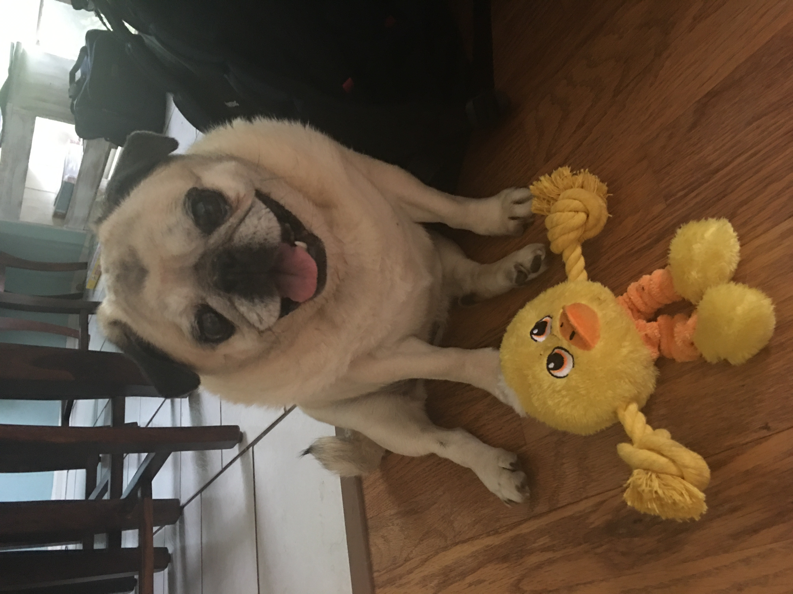
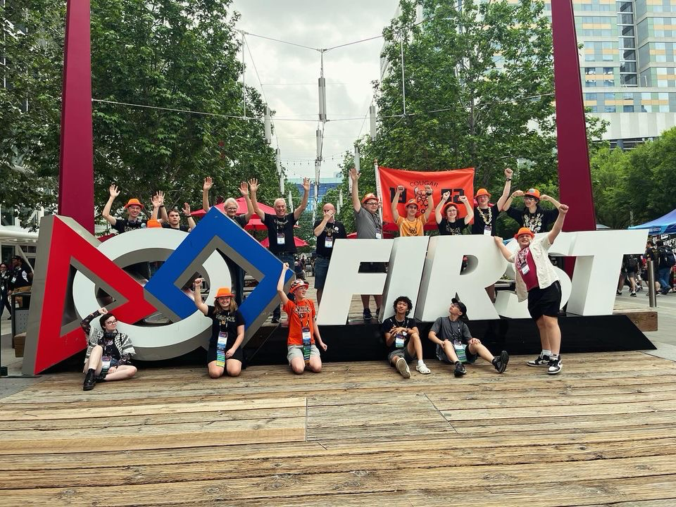

Jonah Miller
Junior in highschool
Aspiring Aerospace Engineer | ProX Intern | Actor | Hardworker

Junior in highschool
Aspiring Aerospace Engineer | ProX Intern | Actor | Hardworker
Phone: (913) 449-9680
Work: 3162803@smsd.org
Personal: Jman4142009@gmail.com
LinkedIn: Jonah Miller
Organization
Learned Skils

I am a straight A student, always striving for the best and how to help others. Love engineering and the performing arts. I have done numerous service projects with Church of the Resurrection and organizations throughout the United States.
Shawnee Mission Northwest High School
Graduation Date: May 2027
GPA: 4.8
I am a part of many clubs and I am a straight A student in all honors classes
Cougar Robotics
SMNW Thespian Troop #888
Church of the Resurrection
I enjoy Legos, Star Wars, and hanging out with my family. I enjoy playing games with my friends and family, both physical and video games. My family is a large portion of my life who keeps me on track.


